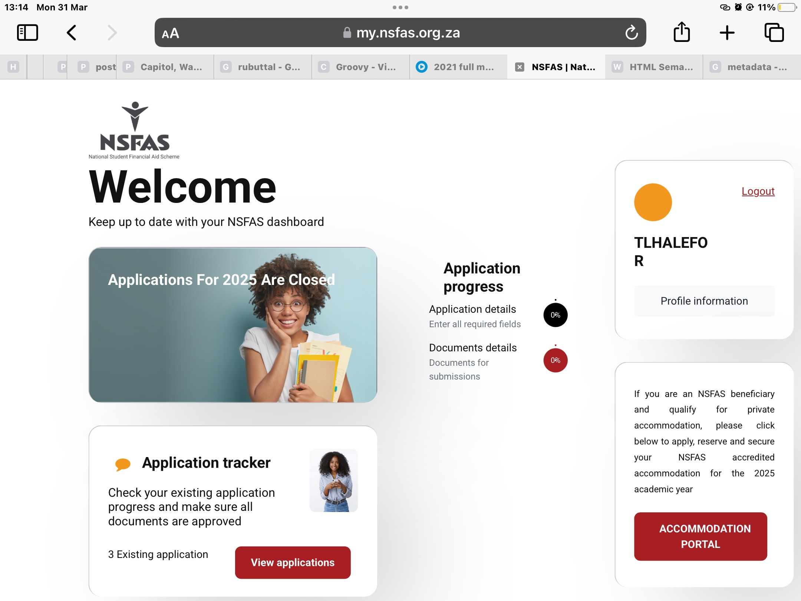
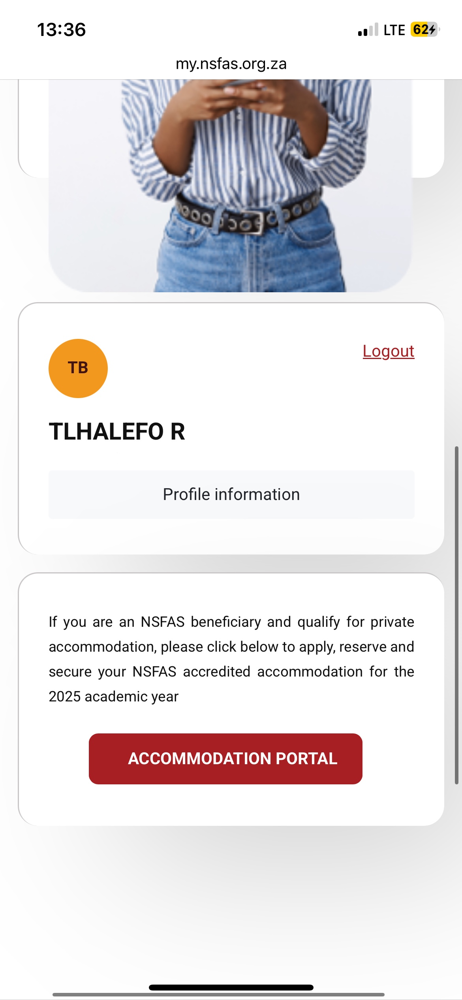
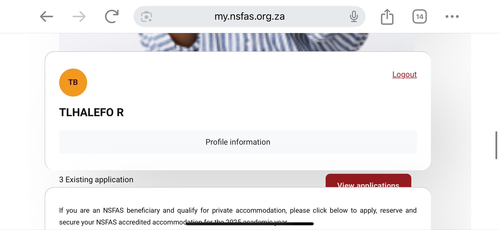

My NSFAS The mynsfas portal is an essential website to mine and a lot of students lives as we pursue education. With that being said I think it’s essential that the website be easy to navigate an make use of because it displays important information regarding the status academic funding. With that being said, the mynsfas portal however is not. It’s slow, unresponsive and not adaptive to other devices With bad UI that makes sense in terms of design but not in terms of application for example on a phone, the button to track the progress of your funding application is not even visible and is hidden behind other elements of the website. Here is how it looks on an iPad (similar to the desktop layout)
And here is how it looks on a IPhone in portrait layout
Only once you put the phone in landscape are you able to slightly see the track application portal>
 Pros:
The myNSFAS page is functionally straightforward, offering a centralised login portal for students to manage their funding. Its simplicity in layout makes it easy to identify key functions. The site also aligns with institutional branding, giving users a sense of legitimacy and official presence, which is vital for trust in such a bureaucratic system.
Cons:
However, the page suffers from several usability and design issues. The visual hierarchy is weak—text often feels cluttered, and buttons lack emphasis or feedback upon interaction, which makes navigation less intuitive. Loading times can be long, especially during peak usage, pointing to backend inefficiencies. Error messages are often vague, offering little guidance on how to resolve issues, which frustrates users rather than assisting them. Accessibility also lacks depth—screen reader compatibility and semantic HTML structure could be improved to accommodate users with disabilities. Overall, the experience often reflects the systemic inefficiencies of the broader NSFAS structure: it functions, but often feels opaque, delayed, and indifferent to the emotional or temporal urgency of its users.
As this is a website that is quite Important in the context of my life that I make use of frequently, I think it would be easy to write a more critical analysis of the website from the perspective of a user of the website and a developing web developer.
Rea Vaya
Here’s just another example to support the argument that websites created by the government aren’t created with the user in mind, the UI and just the whole experience of the website including the layout and the way information is presented, which renders the website almost inaccessible.
Even upon visiting the website I often leave with little to information of the Rea Vaya bus routes, due to the difficulty in navigating the site to obtain that information (https://www.dha.gov.za/index.php/32-latest-news-update supporting website for bad UI/UX)
My Friend Ned
Here is the website for MyFriendNed, a modelling agency in SA that makes good of UX/UI
The design is consistent and has the visual aesthetic of the website mirrors that of a magazine which makes sense as models appear in magazines.
This simple design choice allowed for a cohesive and organic experience in navigating the website and the information presented on it.
The UI nice to interact with and looks nice In terms of design aswell so an analysis of th website would also be beneficial in helping understand what
UI/UX makes a website responsive and good to use on multiple devices that I can then just apply to the development of my own website